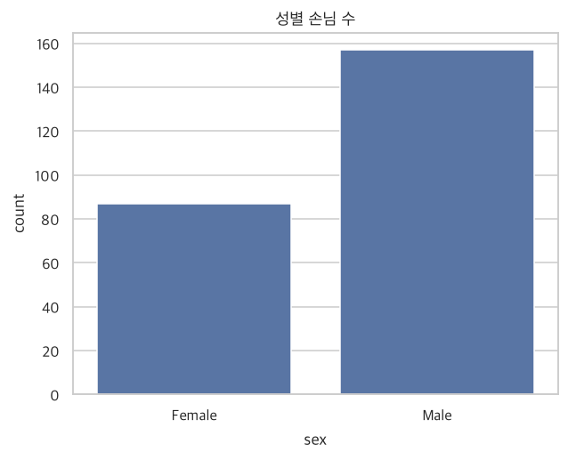

통계 분석이란?
데이터를 요약하는 것과, 일부로 전체를 추측하는 것
- 기술통계와 추론통계가 무엇이 다른지 설명할 수 있다.
- 통계 분석의 5단계 절차를 안다.
- 변수(데이터의 열)를 질적/양적으로 구분할 수 있다.
- 파이썬(pandas)으로 데이터를 불러와 처음 들여다볼 수 있다.
1.1 기술통계 분석 (Descriptive Statistics)
기술통계는 가지고 있는 데이터를 표, 그래프, 대표 숫자로 정리해서 한눈에 알아보게 만드는 방법입니다.
학기가 끝나면 학생 100명의 성적표가 쌓입니다. 100장을 하나하나 읽는 대신 “반 평균은 78점, 최고점은 98점”이라고 한 줄로 말해 주면 훨씬 이해하기 쉽죠? 기술통계는 이렇게 긴 이야기를 짧은 요약문으로 줄이는 일입니다. 책 한 권을 ‘줄거리 세 줄’로 요약하는 것과 같아요.
다만 요약하는 순간 세부 정보는 사라집니다. “반 평균 78점”만 들으면 모두가 78점 근처인지, 100점과 50점이 섞여 있는지 알 수 없는 것처럼요. 그래서 평균 하나로 끝내지 않고 여러 방법을 함께 씁니다.
이번 수업에서 쓸 첫 번째 데이터를 불러와 봅시다. 어느 식당에서 손님이 낸 계산서를 모은 tips 데이터입니다. 먼저 필요한 도구(라이브러리)를 불러옵니다.
라이브러리는 공구함입니다. pandas는 엑셀 같은 표를 다루는 공구, matplotlib·seaborn은 그림을 그리는 공구, numpy는 계산기 공구입니다. import는 “공구함을 책상 위에 꺼내 놓는다”는 뜻이에요.
import pandas as pd
import numpy as np
import matplotlib.pyplot as plt
import seaborn as sns
import platform
sns.set_theme(style='whitegrid') # 그래프 기본 스타일 (이 줄을 먼저!)
# 그래프에서 한글이 깨지지 않게 하는 설정 (운영체제에 맞는 글꼴 선택)
plt.rcParams['font.family'] = {'Darwin': 'Apple SD Gothic Neo', 'Windows': 'Malgun Gothic'}.get(platform.system(), 'NanumGothic')
plt.rcParams['axes.unicode_minus'] = False # 마이너스(-) 기호 깨짐 방지
tips = pd.read_csv("data/tips.csv") # CSV 파일(엑셀과 비슷한 표)을 읽어서 tips라는 이름 상자에 담기
tips.head(10) # 위에서 10행만 미리보기
| total_bill | tip | sex | smoker | day | time | size | |
|---|---|---|---|---|---|---|---|
| 0 | 16.99 | 1.01 | Female | No | Sun | Dinner | 2 |
| 1 | 10.34 | 1.66 | Male | No | Sun | Dinner | 3 |
| 2 | 21.01 | 3.50 | Male | No | Sun | Dinner | 3 |
| 3 | 23.68 | 3.31 | Male | No | Sun | Dinner | 2 |
| 4 | 24.59 | 3.61 | Female | No | Sun | Dinner | 4 |
| 5 | 25.29 | 4.71 | Male | No | Sun | Dinner | 4 |
| 6 | 8.77 | 2.00 | Male | No | Sun | Dinner | 2 |
| 7 | 26.88 | 3.12 | Male | No | Sun | Dinner | 4 |
| 8 | 15.04 | 1.96 | Male | No | Sun | Dinner | 2 |
| 9 | 14.78 | 3.23 | Male | No | Sun | Dinner | 2 |
데이터프레임(DataFrame)은 파이썬의 엑셀 시트입니다. 행(가로줄) = 관측치(손님 한 팀), 열(세로줄) = 변수(손님의 특성)입니다. 변수는 말 그대로 값이 변하는 항목이라는 뜻이에요.
tips.shape # (행 수, 열 수)
(244, 7)
아래처럼 성별 손님 수를 세어 표로 만드는 것이 가장 단순한 기술통계입니다.
tips["sex"].value_counts() # 성별(sex)별로 몇 팀인지 세기
| count | |
|---|---|
| sex | |
| Male | 157 |
| Female | 87 |
sns.countplot(data=tips, x="sex") # 같은 내용을 막대그래프로
plt.title("성별 손님 수")
plt.show()

R의 table(tips$sex)가 파이썬의 tips["sex"].value_counts(), R의 ggplot()+geom_bar()가 sns.countplot()에 해당합니다.
1.2 추론통계 분석 (Inferential Statistics)
추론통계는 전체(모집단)를 다 조사할 수 없을 때, 일부(표본)만 보고 전체의 특성을 추측하는 방법입니다.
큰 솥에 끓인 국이 싱거운지 알고 싶을 때, 솥 전체를 다 마시지 않죠. 한 숟가락 떠서 간을 보고 “국 전체가 싱겁다”고 판단합니다. 여기서 국 전체 = 모집단, 한 숟가락 = 표본입니다. 단, 국을 잘 저어서(무작위로) 떠야 숟가락 맛이 전체 맛을 대표해요. 그리고 숟가락 맛과 솥 전체 맛은 약간의 차이가 있을 수 있다는 점을 늘 염두에 둡니다. 추론통계는 이 차이를 확률로 관리하는 학문입니다.
| 구분 | 기술통계 | 추론통계 |
|---|---|---|
| 하는 일 | 가진 데이터를 요약·정리 | 일부로 전체를 추측 |
| 비유 | 성적표를 한 줄로 요약 | 국 한 숟가락으로 전체 간 보기 |
| 예 | 우리 반 평균 점수 | 선거 여론조사로 전국 지지율 추정 |
| 기반 | 표·그래프·대표값 | 확률 이론 |
실생활 예: 여론조사·정당 지지도, 신약 임상시험, 야생동물 개체 수 추정 등이 모두 추론통계입니다. 이번 수업은 기술통계가 중심이고, 추론통계는 이후에 다룹니다.
1.3 통계 분석의 5단계 절차
통계 분석은 요리와 순서가 비슷합니다. 무엇을 만들지 정하고 → 장을 보고 → 재료를 다듬고 → 조리하고 → 맛보고 손님에게 냅니다.
| 단계 | 하는 일 | 요리로 비유하면 |
|---|---|---|
| ① 문제 정의 | 분석 목적·범위·활용 방안 정하기 | 오늘 무슨 요리를, 누구에게 만들까? |
| ② 데이터 수집 | 필요한 데이터 정의 → 수집 계획 → 수집 | 장보기 |
| ③ 전처리 및 탐색 | 데이터 합치기·나누기, 이상한 값(이상치)·빈칸(결측치) 정리, 분포 살펴보기 | 재료 씻고 다듬고, 상한 부분 도려내기 |
| ④ 통계 모형 수립 | 모형 정하기 → 데이터에 맞추기 → 잘 맞는지 평가 (돌고 도는 과정) | 조리하며 간 보고 다시 조절하기 |
| ⑤ 결론 도출 | 핵심 사실 정리, 기존 지식과 비교, 해결책 제시 | 맛있는 요리를 손님상에 내기 |
이 수업(2~5장)은 주로 ③ 전처리 및 탐색 단계, 즉 ‘재료 살펴보기’를 배웁니다. 재료를 제대로 살펴보지 않고 조리부터 하면 요리를 망치기 쉽습니다.
1.4 변수의 종류
변수는 크게 질적 변수(범주형)와 양적 변수(수치형)로 나뉩니다. 이 구분이 중요한 이유는, 변수 종류에 따라 쓸 수 있는 분석 방법과 그래프가 달라지기 때문입니다.
질적 변수는 이름표·꼬리표입니다. 혈액형이 A형인지 B형인지는 ‘구분’일 뿐, A+B를 계산하지 않죠. 양적 변수는 자(ruler)로 잰 값입니다. 키 170cm와 160cm는 더하고 빼고 평균을 낼 수 있어요.
| 큰 분류 | 세부 분류 | 특징 | 예시 |
|---|---|---|---|
| 질적(범주형) | 명목형 | 순서 없음 | 성별, 지역, 전공, 요일 |
| 질적(범주형) | 순서형 | 순서 있음, 하지만 사칙연산 불가 | 학년, 만족도(상/중/하), 학위 |
| 양적(수치형) | 구간형 | 숫자, 절대적 0점이 없음 | 섭씨 온도 (0도는 ‘온도 없음’이 아님) |
| 양적(수치형) | 비율형 | 숫자, 절대적 0점이 있음 | 키, 몸무게, 금액 |
순서형은 달리기 시상대(1등·2등·3등)입니다. 순서는 알지만 1등과 2등의 실력 차이가 2등과 3등의 차이와 같다는 보장은 없어요. 그래서 “1등 + 2등 = 3등”처럼 계산하지 않습니다.
파이썬에서는 dtypes로 각 열의 자료형을 확인합니다. 우리가 정한 분류와 연결해 보세요.
tips.dtypes
| 0 | |
|---|---|
| total_bill | float64 |
| tip | float64 |
| sex | str |
| smoker | str |
| day | str |
| time | str |
| size | int64 |
| pandas 자료형 | 대체로 해당하는 변수 종류 | tips 데이터의 예 |
|---|---|---|
object (글자) | 질적 변수 (명목형) | sex, smoker, day, time |
int64 (정수) | 양적 변수 (보통 개수) | size (일행 인원수) |
float64 (소수) | 양적 변수 (측정값) | total_bill (총 금액), tip (팁) |
숫자로 적혀 있다고 모두 양적 변수는 아닙니다. 학번, 우편번호, 전화번호는 숫자지만 ‘이름표’이므로 질적 변수예요. 반대로 글자로 저장돼도 순서가 있으면(예: 하/중/상) 순서형 변수입니다.
순서가 있는 범주형 변수는 파이썬에서 순서형 범주(Categorical)로 알려 줄 수 있습니다. 요일을 예로 들어 볼게요. 이렇게 해 두면 나중에 그래프와 표가 ‘가나다순’이 아니라 ‘우리가 정한 순서’로 나옵니다.
tips["day"] = pd.Categorical(tips["day"], categories=["Thur", "Fri", "Sat", "Sun"], ordered=True)
tips["day"].value_counts().sort_index()
| count | |
|---|---|
| day | |
| Thur | 62 |
| Fri | 19 |
| Sat | 87 |
| Sun | 76 |
위 코드는 요일 순서를 목→금→토→일로 직접 알려주는 설정입니다. 없다면 표가 알파벳순(Fri, Sat, Sun, Thur)으로 나와 읽기 불편합니다.
이 수업에서 쓸 데이터 정리
| 데이터 | 내용 | 행 수 | R 교재의 대응 데이터 |
|---|---|---|---|
| tips | 식당 계산서 (금액·팁·성별·요일 등) | 244 | course (수강생 성적) 대신 사용 |
| titanic | 타이타닉호 승객 (생존 여부·객실 등급·나이 등) | 891 | Arthritis, BrokenMarriage 대신 사용 |
| diamonds | 다이아몬드 (무게·가격·품질) | 53,940 | R의 ggplot2 diamonds와 동일 |
원본 R 교재의 course, Arthritis, BrokenMarriage는 R 패키지(bizstatp)에만 있는 데이터라, 파이썬에서 누구나 쓸 수 있는 공개 데이터로 바꿨습니다. 분석 방법은 똑같이 배울 수 있어요. data 폴더에 CSV 파일이 들어 있습니다.